奇迹夏天
谁是今年夏天最火的加拿大人，答案肯定是多伦多17岁的少女Summer McIntosh。
她又赢了，获得了在巴黎奥运会上的第三枚金牌。加拿大队到现在一共获得了4枚金牌，这个小姑娘就包办了3枚，成为全村人的骄傲。
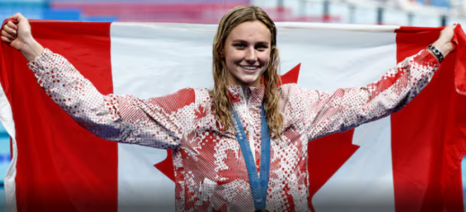
在今天结束的游泳比赛中，她以2分6.56秒的成绩获得女子200米混合泳金牌，此前她已经获得了400米混合泳和200米蝶泳的金牌，以及一块400米自由泳的银牌。
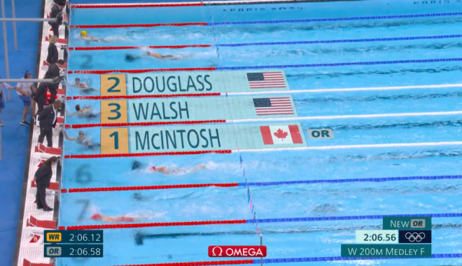
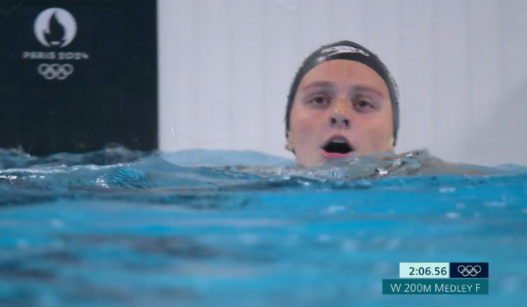
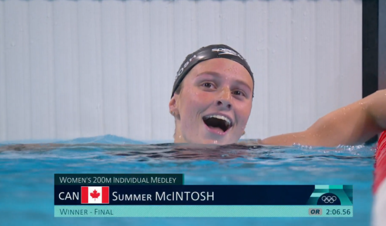
McIntosh已经创造了记录，成为加拿大有史以来在一届奥运会上唯一一名夺得3枚金牌的选手，而且追平了游泳队友Penny Olesksiak一届获得4枚奖牌的记录。
然而，她的奇迹之路还没有结束，在明天最后一天游泳决赛中，McIntosh还将参加混合泳接力比赛，有望再获得一枚奖牌。
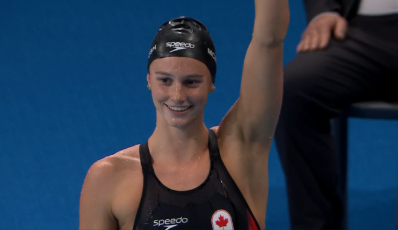
由于McIntosh的出色表现，加拿大游泳队有望收获历届奥运最多的奖牌。
夺冠后，McIntosh表示：“这真是太不真实了。”（It’s pretty surreal）。
谈到获得金牌，她说：“能做到这一点，是因为我为这一刻付出了所有的努力和奉献。我的家人、队友和教练们也为我今天能够站在这里付出了很多。”
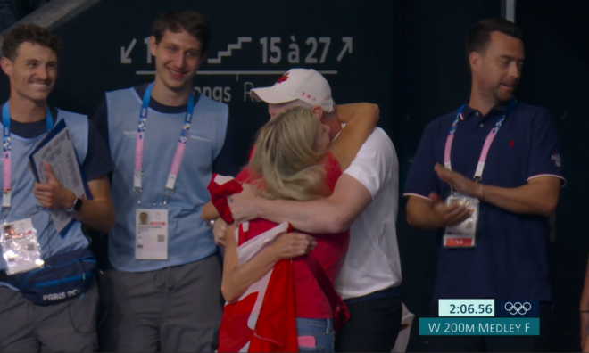
已经成为加拿大奥运第一人，小姑娘丝毫没有骄傲和炫耀：
“在我之前有很多人引领了道路，并激励我走到今天这一步。”
“我真的非常感谢他们。我为自己取得的成就感到骄傲。”
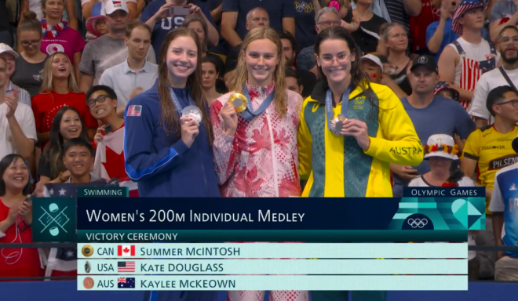
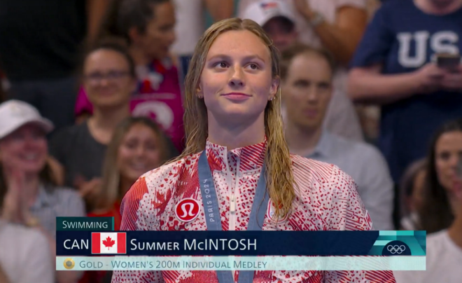
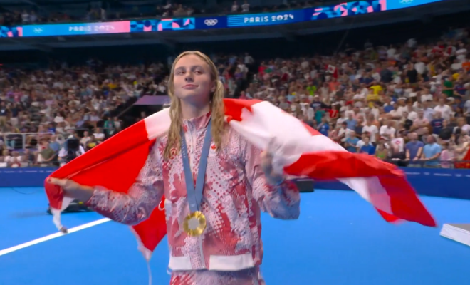
这个夏天，属于这个名叫Summer的奇迹少女。巴黎奥运会的泳池中还有一名奇迹小伙儿，就是法国的马尔尚（Leon Marchand）。他已经获得4块金牌，包括400米混合泳，还有200米混合泳，200米蝶泳和200米蛙泳，力压一众名将。
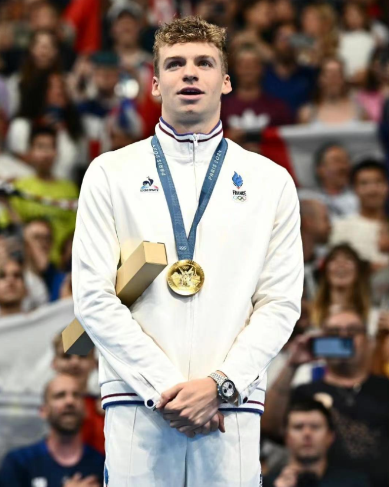
他出身游泳世家，其父母都是游泳运动员。
马尔尚的父亲泽维尔曾是1998年世锦赛混合泳银牌得主，母亲塞琳·博内也保持着女子100米和200米混合泳的法国纪录。
出色的成绩，再加上帅气阳光的外形，现在火的一塌糊涂。
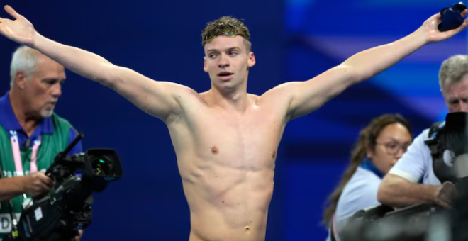
不过，由于一个举动，产生了巨大争议，连谷爱凌也用行动表态。
在他获得金牌的200米混合泳颁奖典礼结束后，中国游泳队教练朱志根主动伸出手，向他表示祝贺，但马尔尚当时弯腰抬隔离带，直接无视，并没有回应朱志根。
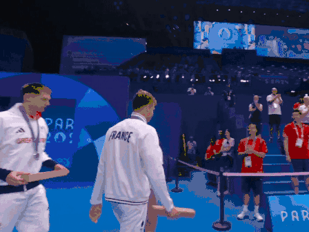
“马尔尚无视朱志根握手”的词条冲上热搜。
事发不久，网友就发现，之前在马尔尚社交媒体下留言“Incredible（难以置信）”，表达赞赏的谷爱凌就删掉了留言，并删除了之前所有与马尔尚的互动，明确表明了态度。
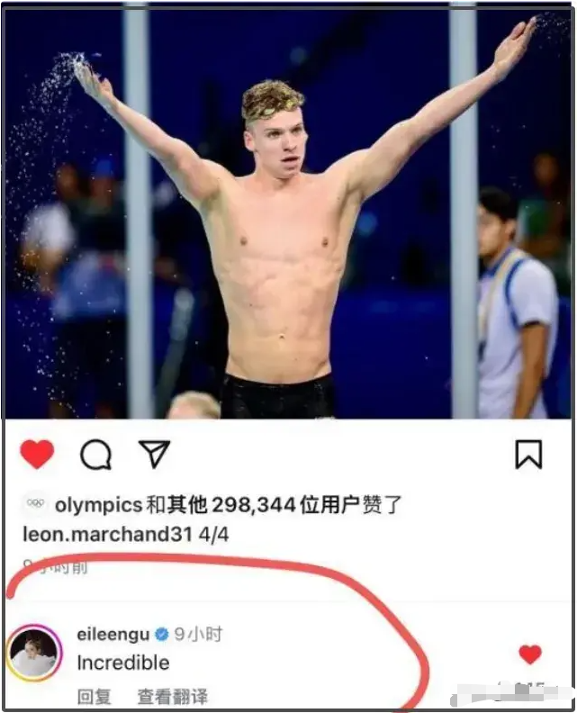
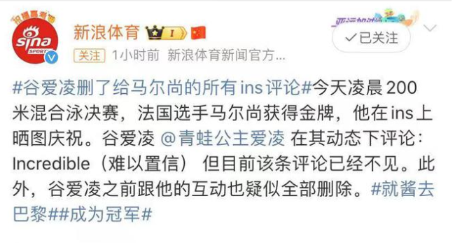
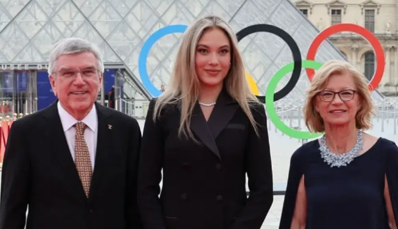
不过，中国游泳队的教练对这个小插曲表现的非常大度，表示：没在意，他回头又打招呼了，别夸大。
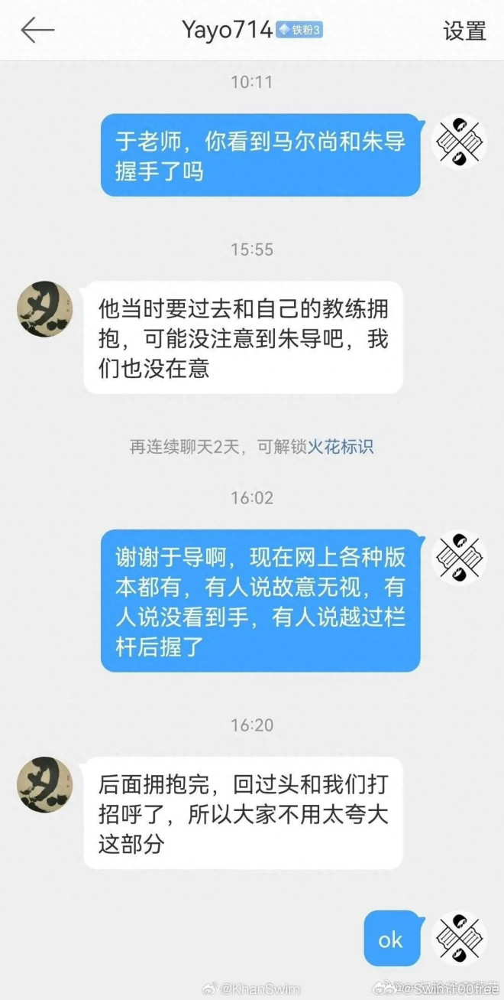
马尔尚在巴黎时间8月3日上午参加完接力预赛后，与法国游泳队的教练一同来到了中国队的休息区，作出解释和道歉。
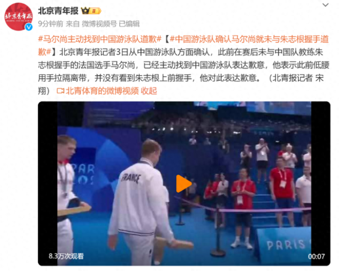
马尔尚提出想找朱志根教练当面说明情况并道歉，不过由于当时朱教练人并未在休息区，所以这份澄清就只能通过中国队的其他成员来代为转达了。马尔尚的解释是，当时他的注意力并没有很集中，以为朱志根教练是在帮他提绳，并没有意识到那是一个主动握手的动作。
本届奥运会，体育之外的插曲很多，但奥运的荣耀永远属于那些奋力拼搏的人们。
今天结束的网球决赛中，中国网球女运动员郑钦文创造了历史，成为第一个获得奥运网球单打金牌的中国人。
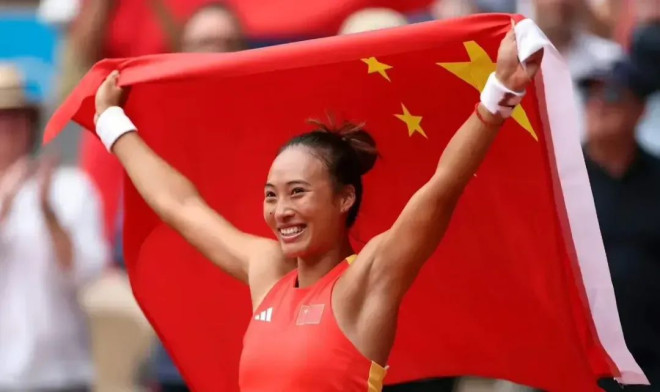
她在决赛中以大比分6-2，6-3战胜克罗地亚球员维基奇。
郑钦文刁钻的回球，令对手破防，竟然摔了拍子。
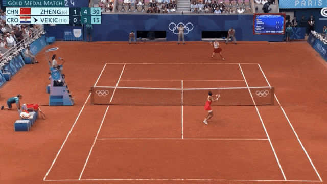
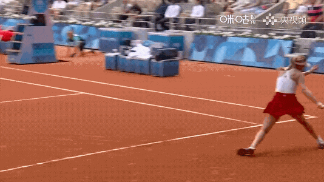
赢下最后一球，郑钦文高兴的躺在地上，双手高举，恣意欢笑！
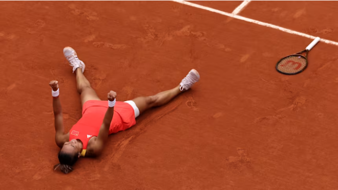
赛后，她表示当时在想：
“我终于、终于、终于做到了，做到了我小时候的梦想。我也知道我爸爸妈妈一直以来把奥运会看的比大满贯还要重要，也包括所有中国人民都把奥运会看的可能比个人的大满贯重要。我终于在那一刻我做到了……”

这位来自湖北十堰的21岁姑娘坦诚单纯，夺冠后感受“有点得意”。“我很少有得意的心情，但是这次拿到奥运会冠军，虽然说不想让人觉得不太符合中国人谦虚的气质，但是内心真的有点得意、有点骄傲，也有点无与伦比的开心。”
她毫不掩饰的表示，拿下这枚奥运冠军后，已经准备好成为一名超级巨星！

“也许庆祝两三天后，我会重回现实，准备好成为更好的球员。但是此刻，请让我尽情享受这个冠军。”
郑钦文在半决赛击败了之前从未战胜过的，现在排名世界第一的波兰名将斯瓦泰克。
斯瓦泰克沮丧的表示，“这可能是职业生涯中最痛苦的失利之一。”比赛结果让人难受，她哭了大概6个小时。
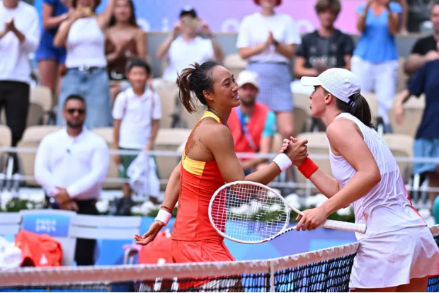
有意思的是，斯瓦泰克表示人们的期望让她感到压力很大，“我并不是真正为自己而战，我更多的是在为别人而战，为国家、为团队、为所有希望我赢得奖牌甚至金牌的人而战”。
郑钦文与她刚好相反，压力变成了强大的动力。
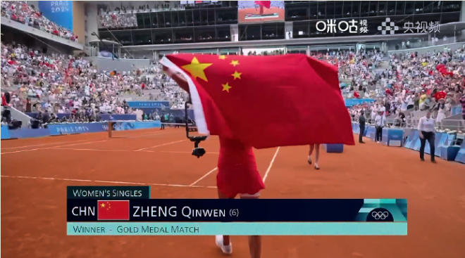
“我为自己感到骄傲、为祖国感到骄傲。我现在感觉自己的心态提升到了一个新的水平。我在两天内打了7个小时的比赛，因为祖国在支持着我，如果需要再战斗三个小时，我也能做到。”